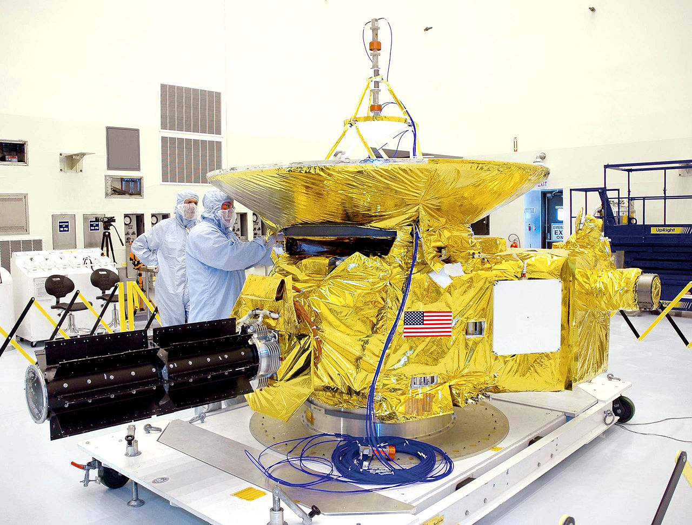

Новые горизонты
«Новые горизонты» (англ. New Horizons) — американская автоматическая межпланетная станция (АМС), запущенная в рамках программы НАСА «Новые рубежи» (New Frontiers). Станция стала первым в истории космическим аппаратом, исследовавшим с близкого расстояния систему Плутона и астероид пояса Койпера Аррокот, а также пятой АМС, развившей третью космическую скорость и покидающей Солнечную систему.
АМС «Новые горизонты» запущена 19 января 2006 года ракетой-носителем «Атлас-5» с базы Космических сил США на мысе Канаверал. При этом станция стала космическим аппаратом, получившим наибольшую скорость при запуске. 28 февраля 2007 года «Новые горизонты» совершила гравитационный манёвр у Юпитера, увеличив свою скорость и проведя попутные научные наблюдения за планетой-гигантом и её системой. Большую часть следующих восьми лет станция с целью экономии ресурса и затрат на управление провела в спящем режиме. Пролёт системы Плутона состоялся 14 июля 2015 года, получены снимки и большой объём иных научных данных о Плутоне, его спутнике Хароне и четырёх малых спутниках. Через четыре года, 1 января 2019 года, «Новые горизонты» изучила с близкого расстояния транснептуновый астероид пояса Койпера Аррокот, который на момент пуска станции ещё не был открыт. Его пролёт стал первым в истории изучением малого тела Солнечной системы за пределами пояса астероидов.
По состоянию на 2021 год, «Новые горизонты» удалилась на расстояние более 50 астрономических единиц от Солнца, станция продолжает вести исследования космического пространства и астрофизические наблюдения. Предполагается, что «Новые горизонты» сохранит работоспособность как минимум до 2035 года и сможет проводить научные исследования на расстоянии свыше 90 астрономических единиц от Солнца.
История создания
Первая возможность исследования Плутона при помощи межпланетной станции появилась в 1970-х годах, когда АМС «Вояджер-1» после пролёта Сатурна могла быть направлена на траекторию, обеспечивающую пролёт Плутона, о котором в тот момент было мало что известно. Но предпочтение было отдано изучению с близкого расстояния обладающего плотной атмосферой Титана, крупнейшего спутника Сатурна. Обеспечивающая пролёт Титана траектория исключила дальнейшее направление «Вояджера-1» к Плутону
Уже в 1992 году группа Стэле сделала полноразмерный макет аппарата, но в ходе проработки концепции PFF выяснилось, что первоначальные оценки массы аппаратов и общей стоимости миссии оказались слишком оптимистичными. Масса каждой АМС быстро выросла до 140—164 кг, а прогноз стоимости миссии превысил $1 млрд, из которых $800 млн составляла стоимость двух ракет-носителей «Titan IV». После гибели в 1993 году сложной миссии Mars Observer в НАСА возобладало негативное отношение к дорогостоящим программам, и была начата новая программа исследования Марса серией меньших по размерам и стоимости аппаратов, получившая приоритет в финансировании. Кроме того, президентская администрация не поддержала увеличение бюджета НАСА, за счёт которого планировалось начать новые исследования, и от миссии к Плутону стали требовать сокращения её стоимости до $400 млн. Естественным решением стал отказ от второго аппарата. Также велись проработки возможности разделения стоимости с иностранными партнёрами. С 1994 года, после встречи Стерна с директором Института космических исследований РАН Альбертом Галеевым рассматривалась возможность совместной миссии с Россией, с запуском на ракете-носителе «Протон» и включением в её состав российского зонда для исследования атмосферы Плутона, который должен был вести трансляцию научных данных вплоть до столкновения с поверхностью.
В начале 1990-х годов были открыты первые объекты пояса Койпера, и в научном сообществе появился запрос на детальное исследование его объектов. Отвечая на него, JPL к 1996 году переформатировала проект PFF, включив в него возможность изучения какого-либо объекта пояса Койпера после пролёта Плутона. Новая миссия получила название Pluto Kuiper Express, она предусматривала запуск в 2004 году АМС, которая после гравитационного манёвра у Юпитера в 2006 году могла бы достичь Плутона в 2012 году. Станция массой 220 кг и ориентировочной стоимостью $600 млн должна была нести 7 кг научной аппаратуры — камеру, инфракрасный и ультрафиолетовый спектрометры, а также оборудование для эксперимента по радиопросвечиванию атмосферы. Первоначально миссия являлась частью Программы систем дальнего космоса (Deep Space System Program), а в 1998 году была объединена с миссиями Europa Orbiter и Solar Probe в проект «Внешние планеты/Солнечный зонд».
Цели миссии
Перед миссией «Новые горизонты» были поставлены следующие научные задачи, разделявшиеся на три группы
- обязательные
- изучение геологии и морфологии Плутона и его спутника Харона
- картирование состава вещества их поверхностей;
- изучение атмосферы Плутона, определение скорости её потери.
- важные
- определение изменения во времени поверхности и атмосферы Плутона;
- стереосъёмка Плутона и Харона
- картирование с высоким разрешением районов вблизи терминатора на Плутоне и Хароне
- картирование выбранных областей с высоким разрешением
- изучение взаимодействия ионосферы Плутона с солнечным ветром;
- поиск в верхних слоях атмосферы нейтральных молекул H, H2, HCN и углеводородов;
- поиск атмосферы у Харона
- определение отражающей способности поверхности Плутона и Харона;
- создание температурных карт поверхностей Плутона и Харона.
- желательные
- поиск магнитного поля Плутона и Харона;
- определение характера среды энергичных частиц вблизи системы Плутона;
- уточнение радиуса, массы, плотности и параметров орбит Плутона и Харона;
- поиск новых спутников и колец Плутона.
Дополнительной задачей миссии являлось изучение с пролётной траектории какого-либо объекта пояса Койпера. На момент запуска «Новых горизонтов» подходящий объект ещё не был найден, его поиски интенсивно велись уже в процессе полёта космического аппарата